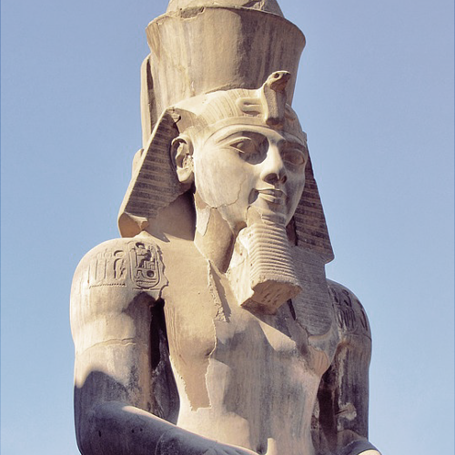

Искусство Древнего Египта отличается своей преданностью традициям.
Подавляющее большинство творений в то время наделялось религиозным смыслом, что обязывало всех создателей
следовать установившимся канонам. Важную роль сыграл также культ Фараона.
Архитектура
Одной из основных особенностей искусства Древнего Египта признается монументальная каменная архитектура.
Каноном требовались стилизация и обобщенность формы, что в случае архитектуры достигалось с помощью геометрических форм элементов сооружений.
Скульптура
Реалистичность гармонично сочеталась со стилизацией, требуемой каноном.
В то время жители Египта были уверены, что душа человека находится в его глазах, и именно поэтому их зачастую делали большими и ярко раскрашивали.
